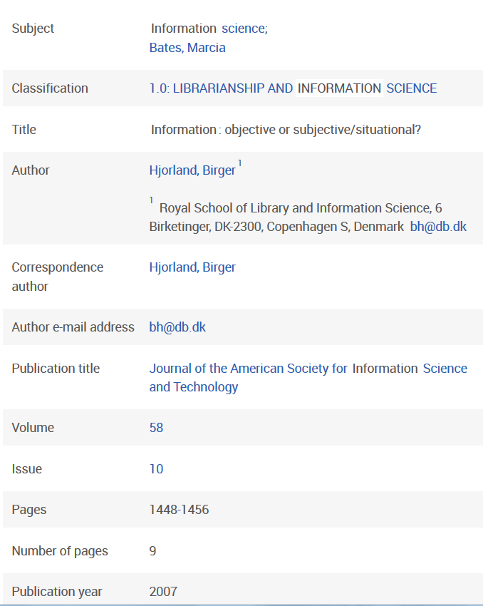

En bibliografisk databas är uppbyggd av ett antal resursbeskrivningar som kallas poster eller katalogposter (om det är en bibliotekskatalog). Varje post motsvarar en resurs och posten utgör en beskrivning av respektive resurs.
Uttrycket "post" (eng: record) anspelar på komponenter i en äldre databasstruktur baserad på att varje beskrivning lagras som en helhet av metadata och inte som enstaka påståenden (som är fallet i RDF-grafer). Uttrycket är dock mycket frekvent även idag i den mening som ges ovan.
En post är lagrad på ett strukturerat sätt som gör att man kan skilja de olika delarna från varandra. Har du läst Glushkos kapitel om datastrukturer kan det kanske vara till hjälp att veta att databasposter i allmänhet är lagrade som dictionaries eller nästlade dictionaries. I en del fall kan det även röra sig om grafer. Poängen med strukturen är att vi kan skilja olika delar åt och söka enbart på den del vi är intresserad av. En vardaglig jämförelse kan vara en flyttlåda, där vi i ena fallet lagt ned allt möjligt huller om buller. Den har ingen struktur utan motsvarar var Glushko kallar för blobb, det vill säga en textmassa. I andra fallet lägger vi först alla strumpor i en mindre ask som vi märker "Strumpor" medan alla gafflar hamnar i en mindre ask som vi märker "Gafflar". Sedan lägger vi ned askarna i den större lådan. Detta motsvarar en dictionary. Får vi frågan "finns det några röda strumpor?" räcker det med att vi letar igenom asken med strumpor, istället för hela lådan. En dator kan göra på samma sätt, fast betydligt mer effektivt. Den kan nämligen leta igenom miljontals "lådor" för att se om en viss bit text finns i en viss "ask".
En databaspost innehåller förstås inga röda strumpor, utan information om resurser. Exakt vilken information posten innehåller beror på vilken databas det är. De olika delarna i en databaspost kallas heller inte för "askar" utan fält. Ibland är fälten också indelade i mindre delar, de kallas i så fall delfält. Vanliga fält är författare, titel, abstract, ämnesord (kallas även subject, subject heading, descriptor), namn på tidskriften (om det är en artikel) och utgivningsår. Eftersom datan är strukturerad gård det att söka enbart mot ett specifikt fält, till exempel författarfältet. Då kommer vi få träff på en post om det namn vi söker på finns i författarfältet, men inte om det enbart är sparat någon annanstans. Detta är användbart när man vill göra precisa sökningar och en stor fördel med databaser.
Som användare av en databas kan man få en uppfattning av vilka fält som finns att söka mot genom att studera några olika poster. I exemplet nedan visas en del av de fält som kan sökas mot i LISA och vad de innehåller för just den här posten. Det står också oftast i databasens hjälpsidor vilka fält som finns.

Figur 1.1: Exempel på hur en del av en databaspost i LISA ser ut.
Den information som finns om en resurs kallas ibland också för metadata. Om vi ser exemplet ovan är "Information Science", "Bates, Marcia" och övrigt i högerspalten metadata. Metadatan är den data om resursen som finns lagrad i posten.
Katalogposter i bibliotekskataloger
Bibliotekskataloger skiljer sig från övriga bibliografiska databaser genom att lagringsformatet i allmänhet är standardiserat. Eftersom bibliotek (till skillnad från kommersiella databaser) vill kunna byta katalogposter med varandra är det en stor fördel om alla använder samma format för att lagra posterna. Än så länge är MARC-21 det vanligaste lagringsformatet, vilket kan beskrivas som en nästlad dictionary - återigen med ett begrepp lånat från Glushko. Men format baserade på länkad data är under utveckling.
Katalogposter i MARC-format kan du bland annat se i LIBRIS. Sök upp en resurs, välj fliken detaljer och tryck på länken "MARC". Ett exempel hittar du här: http://libris.kb.se/bib/8280813?vw=full&tab3=marc.
De olika visningsformaten i LIBRIS är för övrigt ett tydligt exempel på att data som sparats på ett strukturerat sätt kan plockas ut ur databasen och visas på många olika sätt.